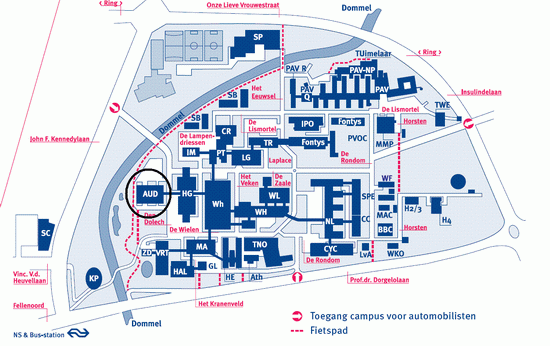

Wanneer
Zaterdag 7 maart 2009, 20.00 uur
Waar
Blauwe Zaal, Auditorium, Technische Universiteit Eindhoven
Kaartjes
Gewone kaarten: €7,50
Studenten: gratis
De toegangskaarten zijn vanaf 19.00 uur op de dag van het concert te koop in het Auditorium van de TU/e. Ook zijn ze online te reserveren via Reserveren in het menu. Gereserveerde kaarten kunnen tot een half uur voor aanvang van het concert afgehaald worden.
Adres:
Den Dolech 2
5612 AZ Eindhoven
Klik op onderstaande afbeelding voor de route naar en de plattegrond van het universiteitsterrein. Het concert vindt plaats in het gebouw gelabeld met AUD. 